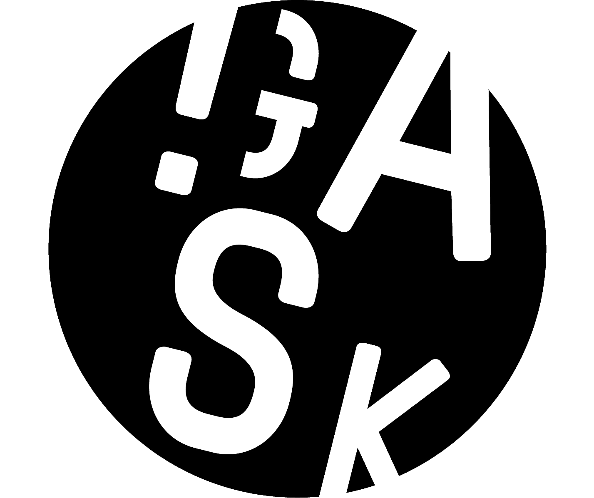
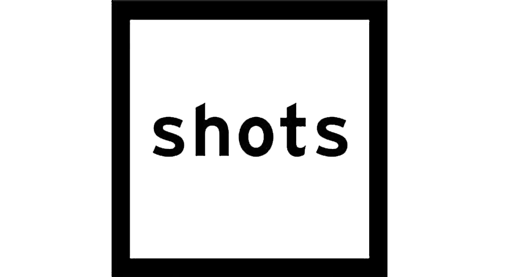

Vzpomínky na budoucnost
26.11.2018
"Věčné otázky Odkud jsme přišli? Kam kráčíme? jsou znova přinášeny na pořad dne. Má člověk ještě šanci najít své čisté, prapůvodní, životodárné kořeny? Ať chtěla, nebo nechtěla, Kristýna Erbenová nám svými fotografickými pohledy do tmy otevírá i tuto sebereflexivní připomínku potlačované dimenze naší existence."
V Austrálii jsem půl roku žila na pláži v obytné dodávce
25.11.2018
"Kolín je už od časů první republiky městem, v němž se rodí, žijí i tvoří výjimeční fotografové. Výrazným zástupcem nejmladší fotografické generace je jedenatřicetiletá Kristýna Erbenová."

GASK: Kristýna Erbenová - MOONDUST
29.10.2018
"Mysteriózní a tajemné série nočních snímků za svitu měsíce zachycující krajinu i blízké přátele odkrývají další poetické roviny naší existence. Australská intimní tvorba je pokračováním fotografické cesty Kristýny Erbenové. Přináší kontemplativní a rozjímavé záběry jako protiváhu k reportážním či dokumentárním záznamům. V souvztažnosti s nalezenými objekty, strukturami nebo krajinnými motivy vytváří osobní reflexi tamní atmosféry."
OBRAZEM
29.10.2018
"Moondust Kristýny Erbenové. Cesta do bezčasí australské buše".
"Fotografka Kristýna Erbenová prozkoumává různé formy samoty. V předchozích souborech nahlížela do světa dospívajících. Nyní v kutnohorské galerii GASK představuje sérii Moondust, která ukazuje její noční putování australskou krajinou. Nejsou to však líbivé přírodní scenerie, ale intimní pohledy do nitra člověka, který je sám uprostřed nedotčené přírody."
Události v kultuře
23.9.2018
"Absolventka Tvůrčí fotografie Slezské univerzity v Opavě a Univerzity Palackého v Olomouci vychází ve své práci z čerstvě nabyté zkušenosti ze zahraničního pobytu v Austrálii, kde strávila více než rok. Autorka pochází z nedalekého Kolína, který je proslulý modernistickou fotografickou tradicí díky světově uznávaným osobnostem, jako byl Jaromír Funke, Josef Sudek či Eugen Wiškovský. Mladá fotografka neotřele navazuje na tuto silnou uměleckou linii experimentálním přístupem a svěžím, neotřelým a snivým nazíráním na realitu. Její mysteriózní a tajemné série nočních snímků za svitu měsíce zachycující krajinu i blízké přátele odkrývají další poetické roviny naší existence. Australská intimní tvorba je pokračováním její fotografické cesty. Přináší kontemplativní a rozjímavé záběry jako protiváhu k reportážním či dokumentárním záznamům. V souvztažnosti s nalezenými objekty, strukturami nebo krajinnými motivy vytváří osobní reflexi tamní atmosféry. "
Ateliér
11.6.2015
"V bezetmí".
"Z hluboké tmy stoupá načekaná záře, která nás nutí uvažovat o fyziologických limitech našeho vnímání stejně jako o poznávacích schopnostech člověka. Implicitně je zde naznačeno, jak rozlehlá mohou být tajemství „za“ naším zřením, které jsme si tak samozřejmě zvykli pokládat za komplexní a vyčerpávající. Další otázkou, která v úvaze diváka tvoří stupňující se napětí, je rozměr a plynutí času. Jsou-li fyzikální danosti relativní, je fyzika v podání Kristýny Erbenové protnuta samou metafyzikou."
{kind=link}
Tma je jen málem světla
21.5.2015
"Mladá fotografka Kristýna Erbenová vystavuje v Galerii Fotografic cyklus nazvaný „V bezetmí“. Barevné snímky zachycují noční krajiny. Fantazie dostává podněty jako překvapení a novou dimenzi reálného světa."
Události v kultuře
16.5.2015
"Místo ve dne začala fotit v noci. Od té doby fotí při každém úplňku. Kristýna Erbenová patří k nejmladší generaci českých fotografů a už má za sebou desítky výstav u nás i v zahraničí."
Fotím v noci
11.5.2015
"Noc, ticho, tma, stříbrné stíny, dobrodružství, strach, zvuky noci, zvířata, návštěvníci, zastavit se, nehýbat, vnímat, propojit se. Tady a teď, v tichosti, sdílet čas a prostor, klid i vnitřní napětí."
Lidové noviny / Orientace
2.5.2015
"Krajiny v souboru Soukromá území Kristýny Erbenové zvou k putování. Nevíme, kdy se vydáme na cestu a kde skončíme. Není důležité, kde jsme. Je to stále jeden a tentýž klidný svět…Úplně jiné je to ve světě lidí. Tam je klid jen zdánlivý. V souboru Somewhere Inside Kristýna Erbenová pomalu otevírá pomyslné dveře do nejrůznějších životních příběhů. ‚Fotím různé lidi, ale vlastně nejde o jejich konkrétní osudy, ale o stále stejný příběh. O jednotlivé životní kapitoly, které známe všichni. Říkám tomu bezčasí a bezprostor.‘"
{kind=link}
Mladé naděje české fotografie: Kristýna Erbenová a její soukromé vlastnictví
31.1.2014
"Série Soukromá území je mapou míst, která si Kristýna Erbenová přivlastnila. Důsledně tak pokračuje ve vlastní hlubinné terapii, ve vhledu do a za obecně vnímanou skutečnost. Soukromá území jsou vždy intimní a jemná místa, důležitá a viditelná hlavně pro jejich majitele."
FOTO magazine
February 2013
"Když se do nich ponoříte, jsou fotografie svou výpovědí opravdu silné, a to i přesto, že jsou vlastně velmi jemné, křehké a poetické. Autorka potvrzuje, že má dar nacházet poetické obrazy na zdánlivě nudných místech a svébytným vizuálním jazykem je s pokorou posílat dál divákovi. Kristýniny fotografie jsou básně, ke kterým si musí najít cestu divák sám – a v jejím případě to vůbec není těžké."
{kind=link}
{kind=link}
Kultura v regionech
17.11.2012
(od času 10:45)
„Melancholická atmosféra bezčasí, schopnost zachytit skryté napětí v na první pohled banálních situacích a dokonalé technické vybavení. To všechno charakterizuje fotografie Kristýny Erbenové.“
Kultura.cz
23.6.2012
Portrét: Fotografka Kristýna Erbenová.
„Mým hlavním tématem je člověk a krajina a člověk v krajině. Být sám, uvnitř sebe. Momenty, které nás vedou k hlubšímu prožití místa a prostoru kolem nás i sebe sama.“
Ateliér
3.5.2012
"Zamlklá zastavení"
"Erbenová nepodléhá krátkodechým trendům, jimiž je fotografická scéna zaplavena. Přes riziko, že bude nařčena z patosu a prvoplánové emocionality, komponuje své fotografie s velkou mírou jistoty a čitelného talentu, jenž je zjevně vytříben obsáhlou znalostí (nejen) výtvarného umění. Tvoří tak čisté a univerzální artefakty, s nimiž může na první pohled stejně jako po delší zkušenosti komunikovat ten, komu není cizí jeden z prvotních účelů umění, jímž je rozhovor se sebou samým a formálně rafinované ztvárnění emocí."
{kind=link}

Shots Magazine
December 2010
"Fragile Moments' depicts a series of restful, serene images, suspended - often in water, but mostly in time - each in some private ecstasy of solitude. The final image in the series, an old man gazing at the portrait of maybe a lost love, is a beautiful essay in a limited and carefully orchestrated colour palatte, which uses light and shade to create infinite depth."
{kind=link}